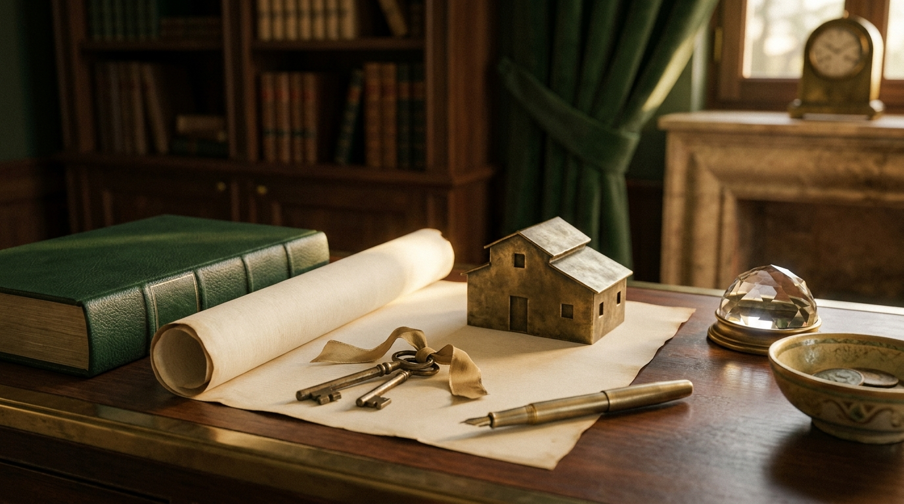

Provvigione dell'agente immobiliare: basta aver messo in contatto le parti
L'agente immobiliare matura il diritto alla provvigione anche se non segue la trattativa fino al rogito. Per la Cassazione è sufficiente che abbia messo in contatto le parti, dando avvio utile all'affare poi concluso. Una precisazione che incide su committenti, venditori e acquirenti, e che ridisegna i confini di un obbligo di pagamento spesso contestato.

Il principio affermato
La questione è ricorrente: l'agente immobiliare presenta un immobile, mette in relazione venditore e potenziale acquirente, poi le parti proseguono da sole e concludono l'affare. A quel punto qualcuno sostiene che, non avendo l'agente "seguito" l'intera trattativa, nulla gli sia dovuto.
La Corte di Cassazione civile ha confermato un orientamento consolidato: la provvigione spetta anche quando l'agente non accompagna la trattativa fino alla firma del contratto definitivo. Ciò che conta è il nesso tra l'attività dell'intermediario e la conclusione dell'affare. Se quel contatto iniziale è stato la causa che ha reso possibile l'accordo, il diritto al compenso sorge.
Inquadramento normativo
Il riferimento è l'art. 1755 del Codice civile, che disciplina la provvigione del mediatore. La norma stabilisce che il mediatore ha diritto al compenso "se l'affare è concluso per effetto del suo intervento".
La formula è precisa e merita attenzione. Non si richiede che il mediatore segua ogni fase della negoziazione, né che sia presente alla stipula. Si richiede un rapporto di causalità: l'affare deve essere stato concluso *per effetto* dell'intervento del mediatore. In altre parole, l'intermediario deve aver messo in relazione le parti in modo tale da rendere possibile, anche solo in via mediata, la conclusione del contratto.
La giurisprudenza ha chiarito che questo nesso causale non viene meno se le parti, dopo il contatto, proseguono autonomamente le trattative. Il cosiddetto "intervento" del mediatore non deve coprire l'intero arco della negoziazione: è sufficiente che abbia rappresentato il fattore determinante che ha avvicinato i contraenti.
Resta fermo che il nesso causale deve essere effettivo. Se le parti si conoscevano già, o se l'affare si sarebbe concluso comunque a prescindere dall'attività dell'agente, il diritto alla provvigione non sorge. L'onere di provare il proprio intervento e il collegamento con l'affare grava sull'agente che chiede il compenso.
Cosa cambia in concreto
Per chi acquista o vende un immobile, la pronuncia ridimensiona un argomento difensivo molto usato: "l'agente non ha fatto nulla dopo il primo incontro". Questo, da solo, non basta a negare la provvigione.
Per l'agente immobiliare, la decisione conferma che la documentazione del proprio operato è decisiva. La sola presentazione delle parti, se provata e collegata all'affare poi concluso, è titolo sufficiente per il compenso.
È utile distinguere due piani. Un conto è l'esistenza del diritto alla provvigione, che dipende dal nesso causale; altro conto è la misura del compenso, che è regolata dal contratto di mediazione o, in mancanza, dagli usi. Anche un intervento limitato nel tempo può quindi generare l'obbligo di pagare l'intera provvigione pattuita.
Attenzione, infine, alla forma. La conclusione di un affare "per effetto" dell'intervento dell'agente non si presume: va dimostrata. Mail, messaggi, moduli di presentazione dell'immobile, visite documentate sono gli elementi che, in caso di contenzioso, fanno la differenza.
Cosa fare in concreto
- Verifica il contratto di mediazione: leggi con attenzione le clausole su provvigione, durata dell'incarico ed eventuale esclusiva prima di firmare qualsiasi modulo.
- Conserva ogni traccia dei contatti: se sei l'agente, archivia presentazioni dell'immobile, visite e comunicazioni; sono la prova del tuo intervento.
- Documenta i rapporti pregressi: se sei l'acquirente o il venditore e conoscevi già la controparte, raccogli ogni elemento utile a dimostrarlo, perché può escludere il nesso causale.
- Non firmare moduli di presa visione con leggerezza: la firma su un modulo di presentazione dell'immobile può valere come riconoscimento dell'intervento dell'agente.
- Fatti assistere prima del contenzioso: in presenza di una richiesta di provvigione contestata, una valutazione preventiva del nesso causale può evitare cause inutili o, al contrario, rinunce indebite.
In sintesi
La regola operativa è semplice: la provvigione segue il nesso causale, non la durata della presenza dell'agente. Chi ha messo in contatto le parti rendendo possibile l'affare ha diritto al compenso, anche se non ha condotto la trattativa fino in fondo. La partita, in concreto, si gioca sulla prova di quel collegamento.
Contributo informativo a cura di Tamburro & Partners - Avv. Giuseppe Tamburro. Non costituisce parere legale.
Ogni contratto ha il suo equilibrio.
Se vuoi una revisione delle clausole o una redazione su misura, scrivi allo studio. Ti rispondiamo entro un giorno lavorativo.